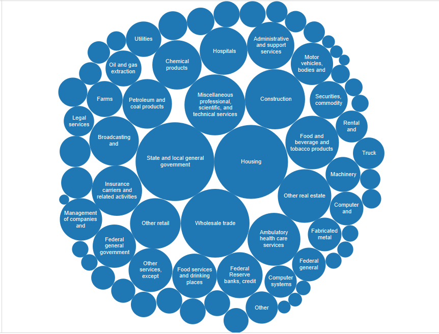
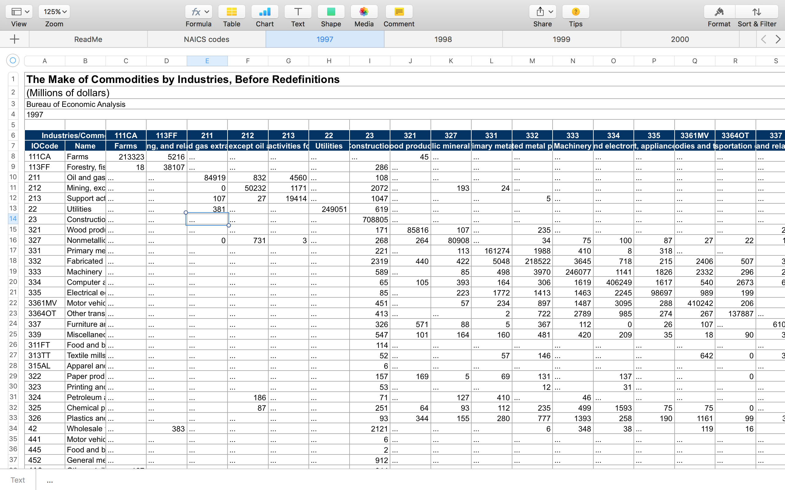

Industry Input-Output tables are used to show the flow of production from one sector of the economy to another.
Data was downloaded from the BEA Website.
Industries.
The make table shows the production of commodities by industries.
The rows present the industries, and the columns display the commodities that the industries produce. Production flows from one industry to another.
Looking across a row, all the commodities produced by that industry are identified, and the sum of the entries is that industry’s output. Looking down a column, all the industries producing that commodity are identified, and the sum of the entries is the output of that commodity.
Industries.
Industries.
Industries.